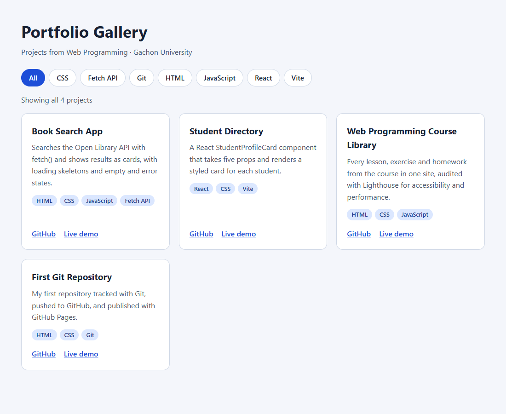
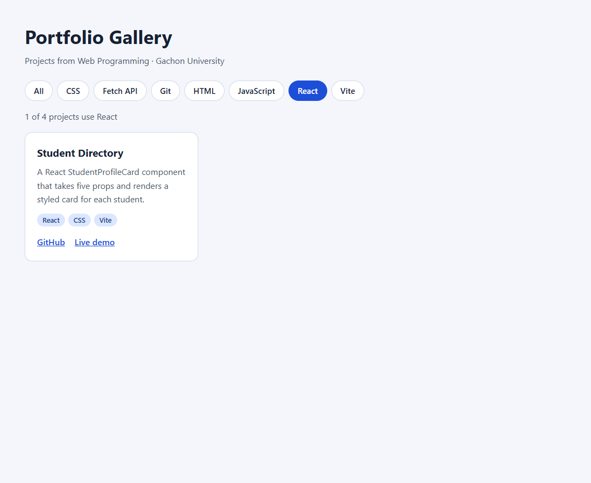

Homework · Portfolio Gallery component
| GitHub repo | https://github.com/WONGDF2006/portfolio-gallery |
| Live site | https://wongdf2006.github.io/portfolio-gallery/ |
Components
App holds the selected filter (useState) and filters the data
├── FilterBar "All" + one button per technology; the active one is aria-pressed
└── ProjectList maps the projects to cards, keyed by a stable id
└── ProjectCard title, description, tech stack, GitHub link, demo link

Commits
3154a6e Fix heading order: project titles are h2 under the page h1
4941d7a Configure GitHub Pages deployment with gh-pages
77b88ab Style the gallery: filter buttons, card grid, and tech tags
2dacd18 Add FilterBar to filter projects by technology
a532b54 Add ProjectList that renders the project cards from data
2cdc3d7 Add ProjectCard component
1fc44b8 Create Vite + React projectChecks
| Every filter button | Shows exactly the projects with that technology |
| Phone width (390 px) | Fits, no sideways scrolling |
| Lighthouse accessibility | 98 → 100 after fixing the heading order |
| Console errors | None |
The slide says npx create-react-app. Create React App was deprecated in 2025 and no longer installs
cleanly, so this uses Vite, the same tool as Task 11-A. The filter buttons are built from the projects' real technologies,
so there is no "Node" button: none of these projects use Node.